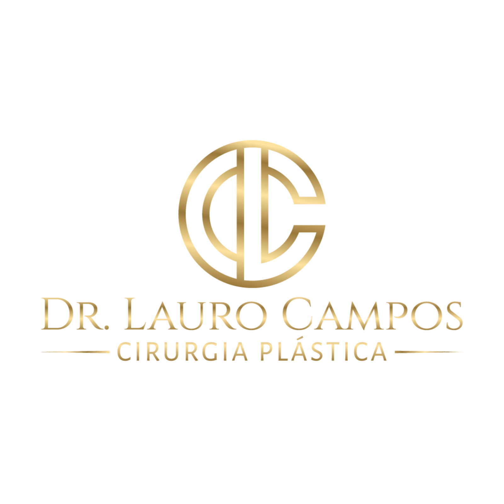

Cirurgias de contorno corporal — mamas, abdome, glúteos e lipoaspiração — com planejamento individualizado, segurança e acompanhamento próximo do pré ao pós-operatório.
Dr. Lauro Campos é cirurgião plástico, membro da Sociedade Brasileira de Cirurgia Plástica (SBCP), com atuação nas áreas Estética e Reparadora da especialidade.
Formação em Cirurgia Geral pela Santa Casa de Misericórdia da Bahia (Hospital Santa Izabel) e especialização em Cirurgia Plástica pelo Hospital das Clínicas de Salvador (HUPES).
Avaliação individual e conduta técnica voltada para um processo cirúrgico seguro e bem orientado.
Resultados pensados para valorizar a harmonia corporal, respeitando proporções e anatomia.
Suporte no pré e no pós-operatório, com orientações claras em todas as etapas da jornada.
Para quem deseja diminuir a cintura, eliminar o excesso de gordura e corrigir a sobra de pele e flacidez.
Para quem deseja esculpir o corpo, realçando o contorno muscular com naturalidade e precisão.
Para quem deseja eliminar a flacidez e a queda das mamas e aumentar o volume mamário.
Ganho de volume e projeção com planejamento respeitando proporções e expectativa realista.
Redução do volume mamário com foco em conforto e harmonia corporal.
Correção de sobras de pele após grande perda de peso, em etapas planejadas.
Cada indicação cirúrgica é definida em consulta, após avaliação médica individualizada.
Primeiro encontro: escuta dos objetivos, avaliação e apresentação do plano de tratamento.
Exames pré-operatórios, definição dos detalhes da cirurgia e orientações do que vem depois.
Internamento hospitalar e acompanhamento nas revisões, do curativo da 1ª semana até a alta.
Alameda das Espatódeas, 567
Caminho das Árvores
Salvador · BA · CEP 41820-460
Atendimento em dias de semana, com agenda definida na consulta.
Agende sua consulta e entenda o plano mais adequado para o seu caso.
Chamar no WhatsApp · (71) 99601-8224